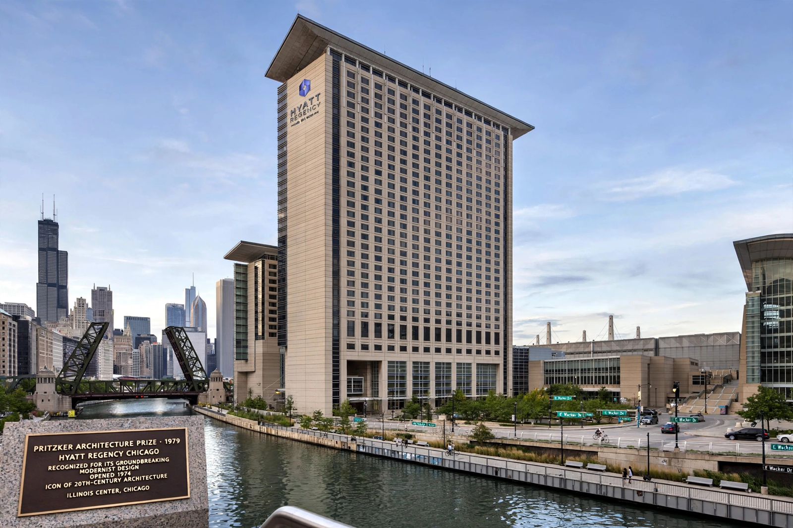

Pritzker Architecture Prize
From Wikipedia, the free encyclopedia

The Pritzker Architecture Prize is an international award presented annually to honour a living architect (or architects) whose built work has produced consistent and significant contributions to humanity and the built environment. Founded in 1979 by Jay and Cindy Pritzker of the Hyatt hotel family, it is often described as architecture's highest honour and is modelled on the Nobel Prize.
History
The prize was established through the Hyatt Foundation in 1979; its first recipient was the American architect Philip Johnson. The laureate receives US$100,000 and, since 1987, a bronze medallion based on designs by Louis Sullivan. The award ceremony is held each year at a significant architectural site around the world.
Selection
Nominees are accepted from any nation and any professional background; a jury of experts deliberates in private. The prize is awarded for a body of work rather than a single building, and it may be shared — as in 2001, when Jacques Herzog and Pierre de Meuron received it jointly, and 2020, when Yvonne Farrell and Shelley McNamara of Grafton Architects won together.
Laureates
Famous laureates include I. M. Pei (1983), Richard Meier (1984), Frank Gehry (1989), Tadao Ando (1995), Rem Koolhaas (2000), Zaha Hadid (2004) — the first woman to win outright — Jean Nouvel (2008), Wang Shu (2012), Toyo Ito (2013), Shigeru Ban (2014) and Balkrishna Doshi (2018). Recent winners include David Chipperfield (2023) and Riken Yamamoto (2024).
Criticism
The prize has been criticised for favouring 'starchitects', for Euro-American bias, and in 2013 for refusing — despite a petition — to retrospectively recognise Denise Scott Brown alongside her husband and partner Robert Venturi, the 1991 laureate.